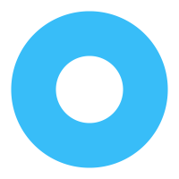

-

做怎么样的事情
很多人分不清各项工作的轻重缓急，没有分清优先级就开始凭借自己的喜好来做，或者遇到困难的事情就一拖再拖。
我们要考虑各项工作的提交日期、工作难以程度、完成这项工作需要耗费的时间等，在纸上标注1、2、3，几点前需要完成什么，完成一项工作就把该项任务划掉，这样把工作细分你会觉得目标感强，完成起来就非常容易了。
所以接下来我要介绍ABC时间管理法
-
ABC时间管理法 是一种高效的时间管理工具，由美国管理学家莱金（Lakein）提出。该方法的核心思想是将待办事项按照重要程度划分为A、B、C三个等级，并依据这些等级来安排工作和分配时间。A级事务： 最重要且必须完成的目标或任务。这些事务与实现个人或组织的关键目标紧密相关，一旦完成，将产生显著的效果。如果未能完成，可能会导致严重的后果。B级事务： 较重要且应该完成的目标或任务。这些事务对于达到目标具有一定的帮助，但不如A级事务那样紧迫。它们可以在一定期限内推迟，但若规定的完成期限较短，则应迅速提升为A级事务。C级事务： 不太重要且可以暂时搁置的目标或任务。这些事务的价值较低，无论其紧急程度如何，都应优先处理A级和B级事务后再行考虑。
实现步骤也很简单。
首先，对工作清单进行分类，根据事务的重要性将其划分为A、B、C三个等级。
然后，根据工作的重要性和紧急程度，确定各项任务的优先顺序，确保为A级事务分配足够的时间和精力。
接着，集中精力完成A类工作，效果满意后再转向B类工作。对于C类工作，在时间精力充沛的情况下可自行完成，但应尽量减少其占用时间，并可考虑委派他人执行以节省时间。
总之，ABC时间管理法是一种简单而有效的时间管理工具，它可以帮助个人或组织更好地规划工作和生活，提高时间利用率和工作效率。